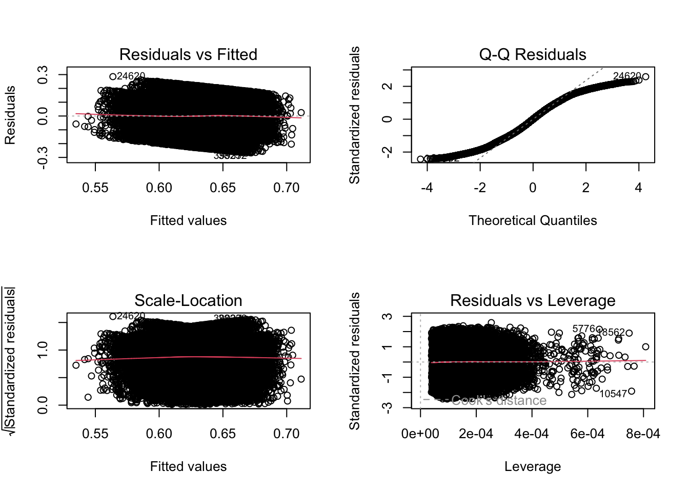
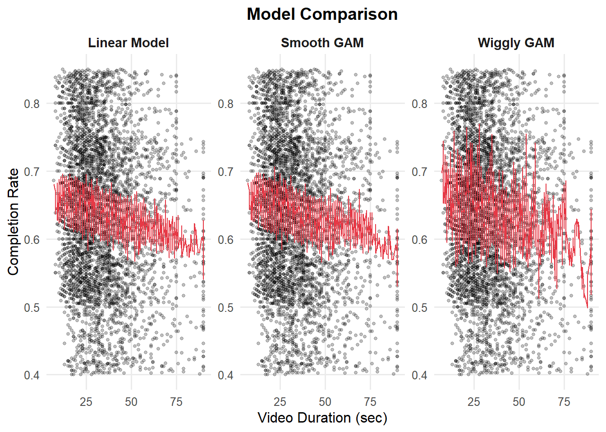
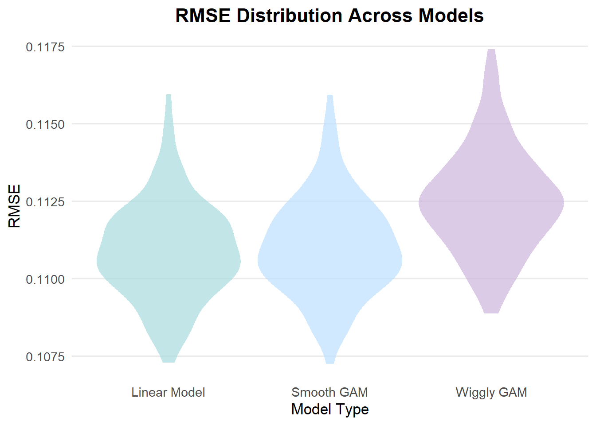

This section explores how completion rate relates to different characteristics of short-form videos. Our goal is not to build a predictive model or establish causal relationships, but rather to identify statistical associations and understand which types of features tend to co-vary with completion_rate. Regression results here provide structural insights that will be expanded upon in the full report.
These regression models are used to examine how completion rate is statistically related to different video attributes and engagement metrics. The analysis is exploratory and association-focused, rather than predictive or causal. Engagement variables such as likes, comments, shares, and saves are included to characterize how completion rate co-varies with other downstream performance indicators.We begin by importing the dataset and selecting variables relevant to the regression analysis. Several engagement-related variables are log-transformed to reduce skewness, and categorical variables are converted to factors for modeling.
shorts_data = read.csv("data/youtube_shorts_tiktok_trends_2025.csv") |>
as_tibble()
df = shorts_data |>
dplyr::select(
completion_rate,
upload_hour,
is_weekend,
views,
likes,
comments,
shares,
saves,
duration_sec,
event_season,
has_emoji,
creator_tier,
creator_avg_views,
platform
) |>
mutate(
has_emoji = as.integer(as.character(has_emoji)),
creator_tier = as.factor(creator_tier),
platform = as.factor(platform),
event_season = as.factor(event_season),
log_views = log(views + 1),
log_likes = log(likes + 1),
log_comments = log(comments + 1),
log_shares = log(shares + 1),
log_saves = log(saves + 1),
log_creator_avg = log(creator_avg_views + 1)
) |>
drop_na()Our response variable is completion_rate, which exhibits neither strong skewness nor heavy tails, as shown in the EDA section. Therefore, no additional transformation or preprocessing of the outcome variable is needed before fitting the regression models.
We begin with linear regression because it provides a clear and interpretable foundation. The linear models are used as an exploratory tool to understand which variables consistently relate to completion rate, rather than as high-performing predictive models.
Before introducing the individual models, we outline the overall model progression:
Model 1 – Baseline: timing variables (event_season, is_weekend, duration_sec, upload_hour)
↓ add engagement
Model 2 – + Engagement: baseline + log_likes, log_comments, log_shares, log_saves
↓ expand to full feature set
Model 3 – Full + Stepwise: add log_creator_avg, creator_tier, has_emoji, then apply backward stepwise
The first model includes only timing-related predictors and basic video attributes. This provides a structural baseline for understanding completion behavior.
model_base = lm(completion_rate ~ event_season + is_weekend
+ duration_sec + upload_hour, data = df)
model_base |>
broom::tidy() |>
dplyr::select(term, estimate, p.value) |>
knitr::kable(digits = 4)| term | estimate | p.value |
|---|---|---|
| (Intercept) | 0.6650 | 0.0000 |
| event_seasonHolidaySeason | 0.0030 | 0.2372 |
| event_seasonRamadan | 0.0059 | 0.1459 |
| event_seasonRegular | 0.0040 | 0.0410 |
| event_seasonSummerBreak | 0.0037 | 0.0759 |
| is_weekend | -0.0006 | 0.5891 |
| duration_sec | -0.0009 | 0.0000 |
| upload_hour | -0.0001 | 0.5239 |
We extend the baseline model by incorporating engagement indicators (likes, comments, shares, saves). These are used exploratorily to assess how completion rate co-varies with downstream performance indicators.
model_add = lm(completion_rate ~ event_season + is_weekend + duration_sec
+ upload_hour + log_likes + log_comments + log_shares + log_saves
, data = df)
model_add |>
broom::tidy() |>
dplyr::select(term, estimate, p.value) |>
knitr::kable(digits = 4)| term | estimate | p.value |
|---|---|---|
| (Intercept) | 0.5751 | 0.0000 |
| event_seasonHolidaySeason | 0.0033 | 0.1878 |
| event_seasonRamadan | 0.0061 | 0.1270 |
| event_seasonRegular | 0.0041 | 0.0341 |
| event_seasonSummerBreak | 0.0037 | 0.0752 |
| is_weekend | -0.0006 | 0.5559 |
| duration_sec | -0.0009 | 0.0000 |
| upload_hour | -0.0001 | 0.4576 |
| log_likes | 0.0090 | 0.0074 |
| log_comments | -0.0009 | 0.6593 |
| log_shares | 0.0010 | 0.6892 |
| log_saves | 0.0025 | 0.0320 |
In this regression, log_likes and log_saves show clearer associations with completion_rate.
To obtain a more parsimonious and robust predictor set, we fit a comprehensive full model and apply backward stepwise selection. This isolates the most consistently informative variables for later nonlinear modeling.
# full model
full_mod = lm(completion_rate ~ event_season + is_weekend + duration_sec + upload_hour
+ log_likes + log_comments + log_shares + log_saves
+ log_creator_avg + creator_tier + has_emoji, data = df)
# stepwise regression(backward)
step_back = step(
full_mod,
direction = "backward",
trace = FALSE
)
step_back |>
broom::tidy() |>
dplyr::select(term, estimate, p.value) |>
knitr::kable(digits = 4)| term | estimate | p.value |
|---|---|---|
| (Intercept) | 0.6638 | 0.0000 |
| duration_sec | -0.0008 | 0.0000 |
| log_likes | 0.0086 | 0.0000 |
| log_saves | 0.0025 | 0.0318 |
| log_creator_avg | -0.0083 | 0.0082 |
| has_emoji | 0.0230 | 0.0000 |
The results from the baseline, engagement-augmented, and full models show that only a small subset of predictors consistently explain variation in completion_rate. Duration remains the strongest structural factor, while likes, saves, creator_avg, and emoji usage retain significance after controlling for other variables. The stepwise procedure formalizes this by selecting exactly these five predictors and removing weaker or redundant features.
model_compare <- tibble(
Model = c("Baseline", "Engagement", "Stepwise"),
R2 = c(summary(model_base)$r.squared,
summary(model_add)$r.squared,
summary(step_back)$r.squared),
Adj_R2 = c(summary(model_base)$adj.r.squared,
summary(model_add)$adj.r.squared,
summary(step_back)$adj.r.squared),
AIC = c(AIC(model_base), AIC(model_add), AIC(step_back)),
BIC = c(BIC(model_base), BIC(model_add), BIC(step_back))
)
model_compare |>
kable(digits = 4, caption = "Comparison of Linear Regression Models") |>
kable_styling(full_width = FALSE, position = "center")| Model | R2 | Adj_R2 | AIC | BIC |
|---|---|---|---|---|
| Baseline | 0.0183 | 0.0181 | -74424.31 | -74345.29 |
| Engagement | 0.0308 | 0.0305 | -75031.82 | -74917.67 |
| Stepwise | 0.0411 | 0.0410 | -75558.23 | -75496.77 |
The three linear models show small but incremental improvements in fit as additional predictors are added. The baseline model has an R-squared of 0.0183, while the engagement model increases it slightly to 0.0308. The stepwise model achieves the highest R-squared at 0.0411.
Although the models include timing features, engagement indicators, and creator-level metadata, all three linear specifications produce relatively low R-squared. This is expected in real short-form video settings for several practical reasons:
Completion rate is heavily influenced by subjective content factors that are not captured in metadata, such as humor, storytelling structure, editing quality, pacing, emotional appeal, and the relevance of the topic to the viewer.
Short-video platforms use complex recommendation algorithms, meaning completion rate is partially shaped by algorithmic exposure patterns that are never observed in the dataset.
Metadata explains structural aspects but not creative quality, which is often the dominant driver of retention.
Linear models assume additive and linear relationships, which may be too restrictive for behaviors that often involve thresholds or nonlinear viewing patterns.
To ensure the validity of inference from the selected linear model, we evaluate standard regression diagnostics. Residual plots help assess linearity, homoscedasticity, and normality assumptions.
par(mfrow = c(2, 2))
plot(step_back) 
par(mfrow = c(1, 1))The Residuals vs Fitted and Scale–Location plots show slight changes in residual spread across fitted values, indicating mild heteroscedasticity and some non-linearity. The Q–Q plot reveals noticeable deviations in the tails from a normal distribution; however, this is also expected because Q–Q plots become highly sensitive with large sample sizes and can highlight even very small departures from normality. The Residuals vs Leverage plot shows a few moderately high-leverage points, but none appear strongly influential.
Overall, the linear model remains adequate for exploratory purposes, but the diagnostics indicate that its assumptions are not fully satisfied and the linear specification may not fully capture the underlying patterns in the data. These limitations motivate the use of nonlinear approaches, such as smooth and wiggly GAM, to capture potential nonlinear patterns that the linear specification may miss.We randomly sampled 5000 observations from the full dataset and applied basic preprocessing. The cleaned data was then split into an 80% training set and a 20% test set.
set.seed(8105)
sdata = read.csv("data/youtube_shorts_tiktok_trends_2025.csv") |>
sample_n(5000) |>
mutate(id = row_number(),
has_emoji = as.integer(as.character(has_emoji)),
log_likes = log(likes + 1),
log_saves = log(saves + 1),
log_creator_avg = log(creator_avg_views + 1)
) |>
as_tibble()
analysis_df =
sdata |>
dplyr::select(
id,
completion_rate,
duration_sec,
log_likes,
log_saves,
log_creator_avg,
has_emoji
) |>
drop_na()
train_df = sample_frac(analysis_df, size = 0.8)
test_df = anti_join(analysis_df, train_df, by = "id")We fit three models using the same set of predictors:
A linear model
A smooth GAM that allows gentle nonlinear effects
A more flexible wiggly GAM
#Linear
linear_mod = lm(completion_rate ~ duration_sec + log_likes + log_saves
+ log_creator_avg + has_emoji, data = train_df)
# GAM (smooth)
smooth_mod = gam(
completion_rate ~
s(log_likes) + s(log_saves) + s(log_creator_avg) + s(duration_sec) + has_emoji,
data = train_df
)
# Wiggly GAM
wiggly_mod = gam(
completion_rate ~
s(duration_sec, k = 30, sp = 10e-6) +
s(log_likes, k = 30, sp = 10e-6) +
s(log_saves, k = 30, sp = 10e-6) +
s(log_creator_avg, k = 30, sp = 10e-6) +
has_emoji,
data = train_df
)For visualization, duration_sec is used here as the x-axis because it is a continuous predictor that allows the linear, smooth, and wiggly models to produce interpretable fitted curves. Other variables from the stepwise model like log_likes or has_emoji are either discrete or less suitable for illustrating non-linear patterns.
# Compare model fits visually
train_df |>
gather_predictions(linear_mod, smooth_mod, wiggly_mod) |>
mutate(
model = fct_recode(
model,
"Linear Model" = "linear_mod",
"Smooth GAM" = "smooth_mod",
"Wiggly GAM" = "wiggly_mod"
)
) |>
ggplot(aes(x = duration_sec, y = completion_rate)) +
geom_point(alpha = .25, size = 1) +
geom_line(aes(y = pred), color = "#E63946") +
facet_wrap(~model, scales = "free_y") +
labs(
title = "Model Comparison",
x = "Video Duration (sec)",
y = "Completion Rate"
) +
theme_minimal(base_size = 12) +
theme(
plot.title = element_text(hjust = 0.5, face = "bold", size = 14),
strip.text = element_text(face = "bold", size = 11),
panel.grid.minor = element_blank()
)
This plot contrasts how three models fit the relationship between video duration and completion rate (with black dots as actual data and red curves as model fits). All models reflect the general pattern that completion rate declines as duration increases. The Linear Model and Smooth GAM yield stable red curves that closely align with this downward pattern. In contrast, the Wiggly GAM shows highly fluctuating and unstable fits, suggesting overfitting to noise rather than capturing meaningful structure.# Cross-validation (100 times)
cv_df = crossv_mc(analysis_df, 100) |>
mutate(
train = map(train, as_tibble),
test = map(test, as_tibble)
)
cv_df =
cv_df |>
mutate(
# linear model
linear_mod = map(train,
\(df) lm(completion_rate ~ duration_sec + log_likes
+ log_saves + log_creator_avg + has_emoji,
data = df)),
# smooth GAM
smooth_mod = map(train,
\(df) gam(completion_rate ~ s(log_likes) + s(log_saves)
+ s(log_creator_avg) + s(duration_sec) + has_emoji,
data = df)),
# wiggly GAM
wiggly_mod = map(train,
\(df) gam(completion_rate ~
s(duration_sec, k = 30, sp = 10e-6)
+ s(log_likes, k = 30, sp = 10e-6)
+ s(log_saves, k = 30, sp = 10e-6)
+ s(log_creator_avg, k = 30, sp = 10e-6)
+ has_emoji,
data = df))
) |>
mutate(
rmse_linear = map2_dbl(linear_mod, test, \(mod, df) rmse(mod, df)),
rmse_smooth = map2_dbl(smooth_mod, test, \(mod, df) rmse(mod, df)),
rmse_wiggly = map2_dbl(wiggly_mod, test, \(mod, df) rmse(mod, df))
)# Violin plot for RMSE
cv_df |>
dplyr::select(starts_with("rmse")) |>
pivot_longer(
everything(),
names_to = "model",
values_to = "rmse",
names_prefix = "rmse_"
) |>
mutate(
model = fct_recode(
model,
"Linear Model" = "linear",
"Smooth GAM" = "smooth",
"Wiggly GAM" = "wiggly"
),
model = fct_inorder(model)
) |>
ggplot(aes(x = model, y = rmse, fill = model)) +
geom_violin(alpha = .7, trim = TRUE, color = NA) +
scale_fill_manual(values = c(
"Linear Model" = "#A8DADC",
"Smooth GAM" = "#BDE0FE",
"Wiggly GAM" = "#CDB4DB"
)) +
labs(
title = "RMSE Distribution Across Models",
x = "Model Type",
y = "RMSE"
) +
theme_minimal(base_size = 13) +
theme(
plot.title = element_text(hjust = 0.5, face = "bold", size = 16),
axis.text.x = element_text(size = 11),
panel.grid.minor = element_blank(),
panel.grid.major.x = element_blank(),
legend.position = "none"
)
The plot above shows the RMSE distribution for the Linear Model, Smooth GAM, and Wiggly GAM. It indicates that the Linear Model and Smooth GAM achieve lower and more stable prediction errors, while the Wiggly GAM shows higher and more variable RMSE values. Overall, the Linear Model and Smooth GAM generalize better than the Wiggly GAM, both in accuracy and stability.